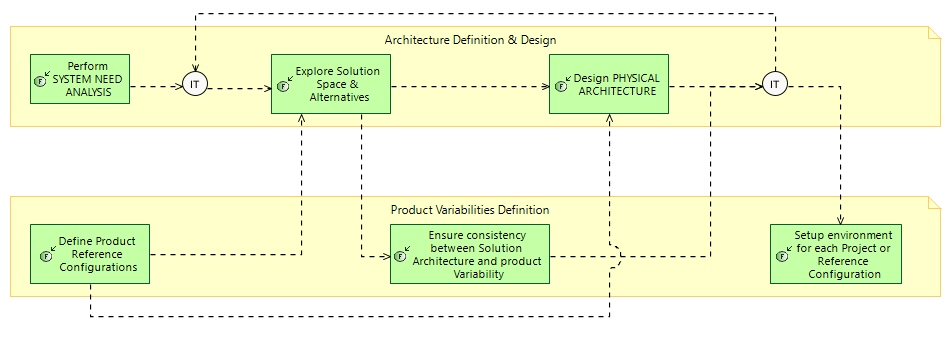

Project Definition in PLE
Engineering Process
Engineering Capabilities > Minimise Development Cost > Project Definition in PLE
Challenge: How to initialise a project from the product line assets
Project should confront its own Need Analysis to the one driving Product Policy and PL Engineering, and orient the customer towards existing Product capabilities.
The solution should be based on tuning existing product reference configurations, and if not possible, on reusing/selecting existing product assets.
The project could contribute to enriching product assets baseline, and adapt or complement product reference configurations.
Related Diagrams
8 Project Definition from Product Line

This figure describes
How to initialise a project from the product line assets
Project should confront its own Need Analysis to the one driving Product Policy and PL Engineering, and orient the customer towards existing Product capabilities.
The solution should be based on tuning existing product reference configurations, and if not possible, on reusing/selecting existing product assets.
The project could contribute to enriching product assets baseline, and adapt or complement product reference configurations.
For each step of this process, involving an engineering task or activity, the description gives some hints and methological recommendations. These recommendations are complementary with the description of the involved activity per se, in the context of the engineering concern and the process.
Contribution of each engineering activity to this process
| Engineering activity | Specifics of activity for this process |
|---|---|
|
|
When building offer for customer, try to propose one of existing product reference configurations. If not possible, try to build a configuration only based on selecting options in product variability tree. |
|
|
Reuse existing product reference configurations as is, as much as possible. Adapt reference configurations according to new needs and segmentation possibly brought by the project. |
|
|
Reuse product definition, reference configurations and reusable engineering assets to speed up alternatives exploration and orient towards existing assets. |
|
|
verify that existing product variability fits most project and customer needs. Check notably that reusing existing assets as is do not hinder performance and non-functional expectations on project solution. Check coherency and completeness of architecture when merging product reusable assets and project-specific ones. |
|
|
Consider promoting some project-specific assets as product reusable assets. |
|
|
Select the product reference configuration closest to the project need, if any. Otherwise, create a project-dedicated configuration from product variability and reusable assets, complementing with project-specific assets. Based on this selection, initialise the project engineering assets from existing ones : requirements, architecture definitions and models, simulations models and scenarios, specialities and disciplines specific assets and models, test means and enabling systems, test campaigns, test cases, and beyond product breakdown structure, development and production means, support means, tooling, etc. |